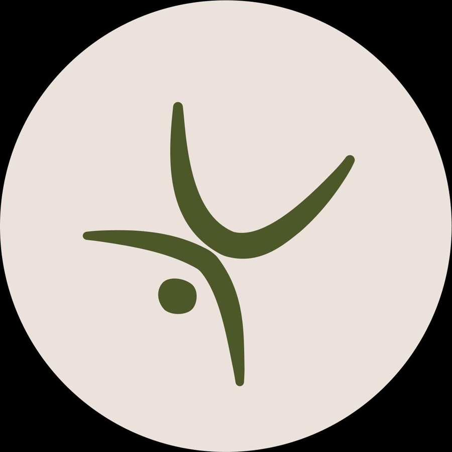

O que oferecemos
Nossas Experiências
Explore o movimento como arte, terapia e jogo. Nosso laboratório oferece práticas que conectam corpo, mente e espírito — das raízes da capoeira à fluidez do yoga.

Capoeira
Arte marcial brasileira que une luta, dança e música. Com mais de 20 anos de experiência, Lev guia você em uma jornada única de expressão corporal.
R$ 80/pessoa · mín. 4 Saiba mais →
Yoga
Práticas de yoga adaptadas à natureza do Cerrado — do movimento de exploração ao olhar interior profundo. Desperte seu ser interior.
R$ 70/pessoa · mín. 4 Saiba mais →
Labirinto Sagrado
Uma caminhada meditativa em espiral que convida à introspecção, clareza mental e conexão com o sagrado. Uma experiência transformadora no coração da natureza.
R$ 100/pessoa · mín. 4 Saiba mais →
Akwatica
Imersão aquática profunda — uma experiência de entrega total à água que traz cura, leveza e reconexão com a fluidez da vida.
R$ 300 · individual Saiba mais →Retiros imersivos para quem busca transformação profunda — dias de desconexão do cotidiano e reconexão com o essencial, guiados por facilitadores experientes.

VitaRoots
5 dias de equilíbrio entre corpo, mente e espírito. Movimento, meditação, trilhas, banho de rio e conexão profunda com a natureza do Cerrado.
Consulte valores Ver programação →
Trabalho Corporal Aquático
3 dias de imersão — Introducao ao TCA.Vamos aprender a receber e curar com a Agua
R$ 1.300 · 3 dias Ver programação →